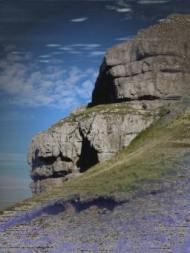

Timothy Murphy
Conestoga Bark
My mate feathers the spindled wheel
to right our tipsy bark,
luffing to windward as we heel
rail under in the dark.
Where boys are brown and salt air sweet,
seafarers find no rest
but wake aground in the waving wheat
that runs forever west.
Robert Ward
I love the bells of bascule bridges ringing
and old recordings of Caruso singing,
the underwater songs of dolphins pinging,
as does this poet with so fine an ear.
Though deaf from childhood, he has bones to hear
the double bass, imperative and near,
all but forgotten by the loud and shrill
who never find the silence to be still
or make their words kneel and confound their will.
Too Old For This Game
I flushed six roosters from a frozen slough
and knocked one down with barrel number two.
Wingtipped by a Federal .20 shell,
a pheasant cock can always race like hell.
The drift rose cattail-tall in the marsh's lee.
I broke through crust. Chest-deep, I paddled free.
Feeney, gone wild with tracking so much scent,
couldn’t imagine where our cripple went.
In knee-high snow we charged most of a mile,
pitting our wind against the rooster’s guile;
then, triumphant, I trudged back to the truck
with bird in vest by dint of dog and luck.
I kenneled up my son of a champion bitch,
gutted the cock, and threw up in the ditch.
Swa Hit Aeror Waes
As “weathered headland” I described the face
of a Norse friend crowding ninety-four,
half deaf, and wholly in a state of grace.
At Hronesnaes the hungry fulmars soar,
and combers roll shoreward at such a pace.
How do you cry “Farvel!” above the roar?
[ Swa Hit Aeror Waes means As It Ever Was in Anglo-Saxon. Hronesnaesse (The Seal’s Nose) is the Swedish headland where Beowulf was entombed. Farvel means Farewell. ]
|